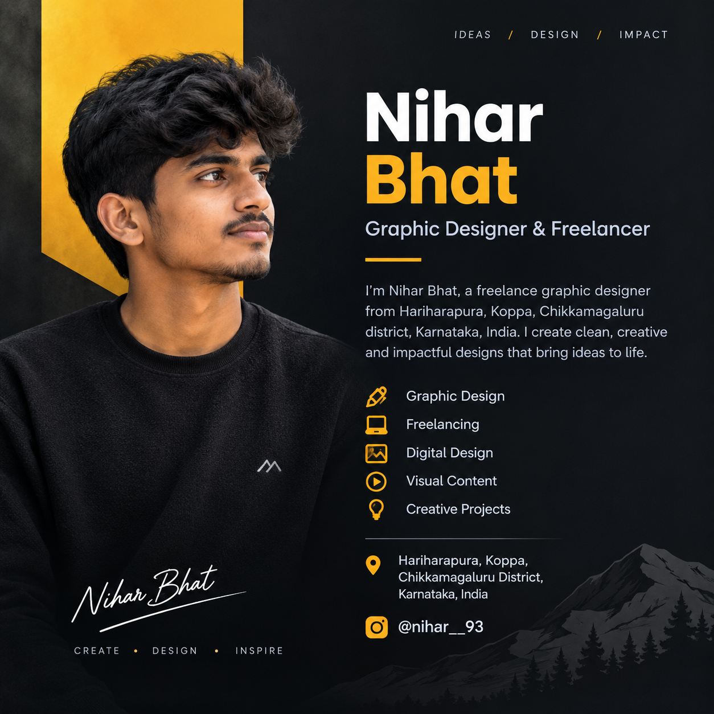

Ideas / Design / Impact
Nihar Bhat
Graphic Designer & Freelancer
I’m Nihar Bhat, a freelance graphic designer from Hariharapura, Koppa, Chikkamagaluru, Karnataka, India. I create clean, creative and impactful visual designs.

About Nihar
Nihar Bhat is a freelance graphic designer based in Hariharapura, Koppa, Chikkamagaluru district, Karnataka, India. He focuses on graphic design, digital visual content and creative projects while building his professional freelance career.
What I Do
Graphic DesignCreative visual design for digital projects.
FreelancingIndependent creative work for clients and projects.
Digital DesignModern visuals designed for online platforms.
Find Me
Name: Nihar Bhat
Location: Hariharapura, Koppa, Chikkamagaluru, Karnataka, India
Instagram: @nihar__93